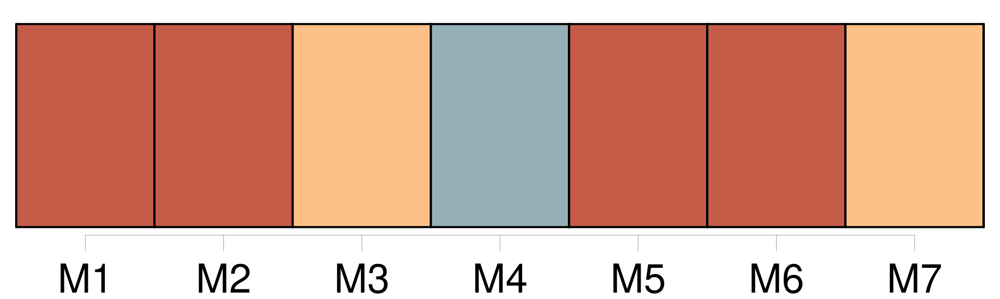

Longueur nb maillons : 17 mentions |
 |
[Mes parents] condamnaient plutôt la camaraderie mixte. [12 phrases]
J'eus la tristesse de voir que je ne m'étais pas mépris sur le bon genre de Carmen, lorsque, après avoir déjeuné avec [mes parents] [qui] me gâtaient et ne me [grondaient] jamais, je rentrai en classe. [217 phrases] Un jour, j'avais entendu [mes parents] parler de la visite d'un M. Grangier. [55 phrases] Car je ne voulais pas qu'elle pût se figurer que je cachais l'académie à [mes parents] , parce qu' [ils] me défendaient de voir des femmes nues. [43 phrases]
Ressentant de l'amour pour Marthe, j'en ôtais à René, à [mes parents] , à mes sœurs. [280 phrases]
» [22 phrases] Devant la maison de [mes parents] , je ne voulus pas laisser Marthe repartir seule, et l'accompagnai jusque chez elle. [56 phrases] À dîner, j'annonçai à [mes parents] que j'entreprendrais le lendemain avec René une longue promenade dans la forêt de Sénart. [11 phrases] Je m'étais juré de ne pas partir avant minuit pour être sûr que [mes parents] dormissent. [1 phrases] Mais comme dix heures sonnaient à la mairie, et que [mes parents] étaient couchés depuis quelque temps déjà, je ne pus attendre. [Ils] habitaient au premier étage, moi au rez-de-chaussée. [5 phrases] Apercevant que la lumière n'était pas encore éteinte dans la chambre de [mes parents] , je fus sur le point de me recoucher. [10 phrases] Une longue minute, je restai debout, les yeux levés vers la fenêtre de [mes parents] , pour voir s' [ils] bougeaient, s'étant aperçus de quelque chose. |

|
Il est possible de télécharger la ressource sur la page Ortolang |
Si vous avez des questions ou vous voyez des erreurs, merci d'envoyer un mail à silvia.federzoni89@gmail.com |